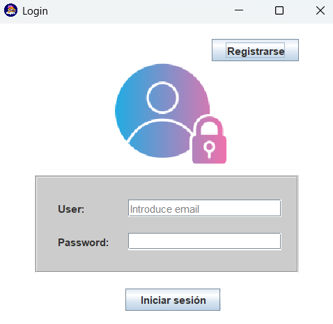

Funciones principales
La aplicación permite:
- Registrar, modificar y eliminar información de mascotas y sus dueños.
- Controlar el acceso según el rol del usuario (Administrador, Recepcionista o Trabajador).
Ventanas principales
Ventana Login: permite iniciar sesión o registrarse para entrar en la aplicación.
Ventana Principal: muestra el logo de la peluquería y cuatro botones:
- Guardar: registrar un nuevo cliente (mascota) junto con los datos de su dueño.
- Ver datos: lista de clientes registrados, con opciones de ver, modificar o eliminar información.
- Usuarios: gestión de usuarios del sistema (solo rol administrador).
- Salir: cerrar sesión y volver a la ventana de inicio.
Ventana Login
Ventana Registro